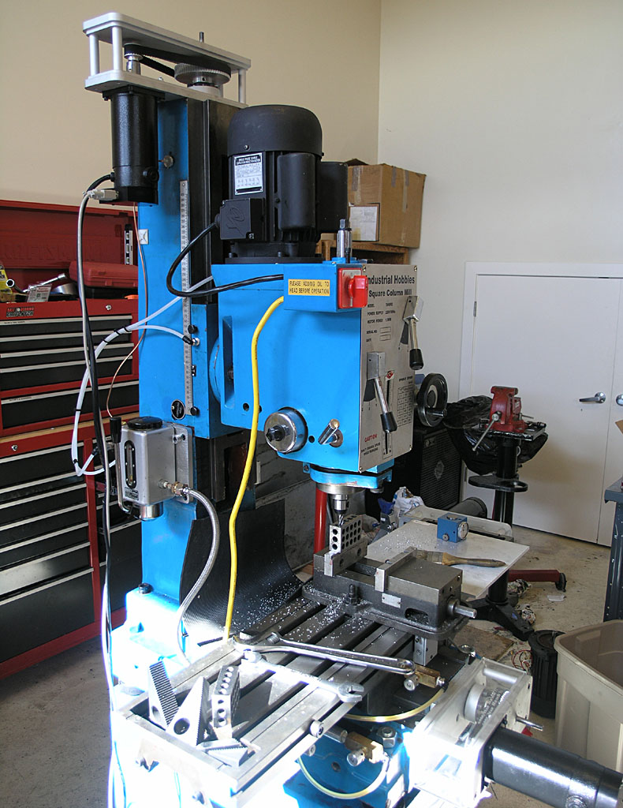
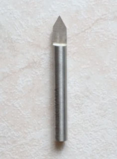
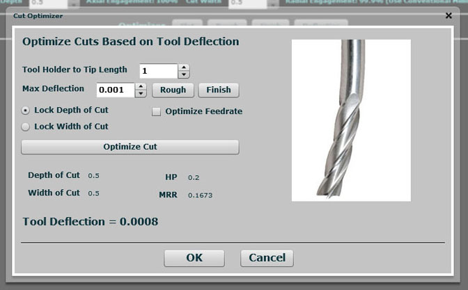

|
10 Things the G-Wizard Feeds and Speeds Calculator Does For You
A lot of what matters to a CNC professional is irrelevant to a hobbyist. You're not worried about saving a few seconds on a part because you're not making 1000 identical parts. On the other hand, you haven't had all the training of the professional and your hobby machine is probably not as rigid or as fast as a full vertical machining center. You'd love to get better surface finishes, and you'd love to quit breaking tools.
G-Wizard can help!
|
1. Simplifies a Complex Process by Building the Expertise Into the Software
There's a lot to know to get good results when machining. The more easily you can get the best answers to the questions your CAM software wants you to answer, the better your project will turn out.
G-Wizard has a feature called CADCAM Wizard that radically simplifies all this. Just give it a little bit of information such as material and your machine's parameters (set that up once) and then the basics about your feature:
- How deep is that pocket?
- What is the minimum inside corner radius?
CADCAM Wizard will then crank out an optimal recipe you can take back to your CAM program to decide how best to machine that pocket or other feature. And you've got a Tortoise-Hare slider so you can dial back for conservative feeds and speeds you'll be comfortable with.

|

See CADCAM Wizard in Action...
|
2. Minimizes Tool Breakage.
One minute things are going well, the next: CRACK! The tool breaks and you're dodging flying cutter bits. Doh! And I only had one endmill left of that size and it'll take a week to get another one by mail.
That's no way to be productive in your shop.
Here's a hidden secret: when you baby a tool by slowing the feedrate way down and taking very shallow width of cut, you may be making tool wear far worse. Due to a weird phenomenon called chip thinning the tool will start rubbing instead of cleanly cutting chips.
Or how about another one: many kinds of stainless steel work harden. If you baby them, you'll suddenly find yourself cutting hardened steel. That's no treat for your endmills, let me tell you!
G-Wizard understands all this and minimizes your tool breakage. It's designed for what I call "Toolroom Feeds and Speeds." Toolrooms make one offs, not 1000's of parts. They want to get through the part without breaking a cutter because any savings versus the bleeding edge limits are less than it takes to deal with a broken tool. Isn't that how you work too?
|
|
3. G-Wizard Can Work Within the Capabilities of Your Machine
Your machine is not as rigid as the CAT 50 taper horizontal mill at the shop you visited recently. Heck, it seems like it's only slightly ahead of a drill press some days when you're mad at it.
We've designed G-Wizard to collect the key information needed to work within the capabilities of your machine and maximize the potential of that machine. Given the machine's weight, work envelope, spindle characteristics, and availability of coolant options, it gives G-Wizard a pretty good idea of how it needs to adjust feeds and speeds to help you and your machine be as successful as possible.
|
 |
4. Tips and Techniques Suggestions: Next Best thing to a Machinist Mentor
Professional machinists have a wonderful luxury compared to amateurs: they get to learn from seasoned professionals. There's a lot that's not written down. Things you have to just see or hear firsthand. G-Wizard can't replace that invaluable learning experience, but it can help a lot for those who can't get it.
We've collected a myriad of tips from various sources and built them into G-Wizard. If it sees you going down a path where a tip might help, it speaks up. Did you know that if the hole depth is greater than X, you should use a peck drilling cycle? If the cut width is greater than Y, use conventional milling instead of climb milling? And you shouldn’t make stepover exactly half the cutter diameter. Those are just a few of the many tips G-Wizard will suggest to you if it sees an opportunity to help.
Why not have an expert keeping an eye out for you?
|
|
5. Micromachining Expertise
Do you use cutters that are less than 1/8” (3mm) in diameter? Why not, they are often cheaper, you're doing smaller work, and they require a less rigid machine. Boy, they sure do break easily too, don't they?
Welcome to the world of micromachining. Cutters are extremely delicate here, tool deflection is much more noticeable, and to make matters worse, a lot of the physics and geometry are subtly different. If you try diving in with the same approach that worked with larger cutters, you’re in for a lot of trial and error.
G-Wizard uses a completely different set of feeds and speeds algorithms based on work done by some of the major machinery manufacturers to determine its recommendations when micromachining.
|
|
6. Dealing With Tool Geometry
So many different shapes: ballnose, toroid/button cutters, v-bits, dovetails, corner rounding, chamfering, and many more. Some of these you can't even find recommendations for online. G-Wizard has a first class geometry module to determine what to do with each of these.
|
 |
7. The Tortoise and the Hare: Surface Finish at Your Fingertips
Machining is all about finding the sweet spots for your tools, machine, and materials. Just to make it more challenging, there are different sweet spots for best surface finish, best material removal rate for roughing, and best tool life. G-Wizard makes it easier for you to dial in your cuts with the Tortoise and Hare slider. Dial it to the Tortoise and you're maximizing your surface finish and tool life. Dial it to the Hare and you're maximizing the material removal rate for roughing.
What could be easier?
|
|
8. Affordability
The professionals tell me that G-Wizard pays for itself on the first job by speeding up their productivity and their machine's productivity. As a hobbyist, how do you cash in?
The answer is that we have a unique pricing approach we call "G-Wizard Lite".
Each year you subscribe to G-Wizard, you get a permanent extra hosepower of capability. Most hobby machines don't exceed 3 horsepower, so if you buy the 3 year subscriptions, that's probably all you'll ever need. Many don't exceed 1 horsepower, so a 1 year subscription covers that. Other than the horsepower limit, your G-Wizard Lite keeps working with all the features updates and support even after the subscription expires.
We're not for every hobbyist. But if you're the sort of craftsman who seeks out a real Haimer 3D Taster instead of a clone, who buys name brand endmills, and who really cares about the craft, G-Wizard is a bargain. Breaking just one high quality coated carbide cutter can run as much as a year's subscription. You don't have to save many cutters to come out way ahead.
|
|
9. How Deep and How Wide Should I Make My Cuts?
I get this question more than almost any other from beginner machinists.
How do I know how deep or how wide to cut? Seasoned machinists fly by the seat of their pants having done it for years. Beginners just have to guess. Until now.
CADCAM Wizard will ask you just a few simple questions and then it will complete a complete roughing and finishing recipe you can take back to your CAM program. If you want to explore and customize the cut more closely, G-Wizard's Cut Optimizer tells you how to maximize either the depth or width of cut within the limits of your tool and machine. It works so well many of the professionals are raving about it. It'll work for you too.
|
 |
10. We Know Materials
You're pretty good with steel versus aluminum versus brass. But what are the different grades and alloys? How do these affect feeds and speeds? What about Wood or Plastics? Want to try your hand with Titanium or hardened steel?
Normally, you'd pay a small fortune as a shop to buy a Materials Database. Or, you'd spend half your life in Google trying to research it by hand. G-Wizard gives you a comprehensive Materials Database right up front.
|
|
|